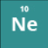
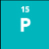
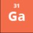
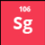
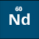
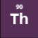

PERİYODİK TABLO
1 2 3 4 5 6 7 8 9 10 11 12 13 14 15 16 17 18
1
HİDROJEN
Sembolü: H
Atom Numarası (Proton Sayısı): 1
Atom Kütlesi: 1.00794(7) g/mol
Elektron Sayısı: 1
Element serisi: Ametal
Periyodik Tablodaki Grubu: 1A
Yoğunluk: 0,09 g/cm3
Erime Noktası: -259,14 °C
Kaynama Noktası: -252,87 °C
Oda Koşulundaki Hali: Gaz
Görünümü: Renksiz
Keşif: Henry Cavendish (1776)
X
HELYUM
Sembolü: He
Atom Numarası (Proton Sayısı): 2
Atom Kütlesi: 4.002602(2) g/mol
Elektron Sayısı: 2
Element serisi: Soy Gaz
Periyodik Tablodaki Grubu: 8A
Yoğunluk: 0,179 g/cm3
Erime Noktası: -272,2 °C
Kaynama Noktası: -268,93 °C
Oda Koşulundaki Hali: Gaz
Görünümü: Renksiz
Keşif: Pierre Janssen (1868)
X
2
LİTYUM
Sembolü: Li
Atom Numarası (Proton Sayısı): 3
Atom Kütlesi: 6.941(2) g/mol
Elektron Sayısı: 3
Element serisi: Alkali Metal
Periyodik Tablodaki Grubu: 1A
Yoğunluk: 0.534 g/cm3
Erime Noktası: 180.54 °C
Kaynama Noktası: 1342 °C
Oda Koşulundaki Hali: Katı
Görünümü: Gümüşümsü beyaz, gri
Keşif: Johann Arvedson (1817)
X
BERİLYUM
Sembolü: Be
Atom Numarası (Proton Sayısı): 4
Atom Kütlesi: 9.012182(3) g/mol
Elektron Sayısı: 4
Element serisi: Toprak Alkali Metal
Periyodik Tablodaki Grubu: 2A
Yoğunluk: 1.85 g/cm3
Erime Noktası: 1287 °C
Kaynama Noktası: 2469 °C
Oda Koşulundaki Hali: Katı
Görünümü: Beyaz-boz metalik
Keşif: Friedrich Wöhler (1828)
X
BOR
Sembolü: B
Atom Numarası (Proton Sayısı): 5
Atom Kütlesi: 10,811(7) g/mol
Elektron Sayısı: 5
Element serisi: Metaloid (Yarı metal)
Periyodik Tablodaki Grubu: 3A
Yoğunluk: 2,34 g/cm3
Erime Noktası: 2076 °C
Kaynama Noktası: 3927 °C
Oda Koşulundaki Hali: Katı
Görünümü: Siyah-kahverengi
Keşif: Gay-Lussac ve Thenard (1808)
X
KARBON
Sembolü: C
Atom Numarası (Proton Sayısı): 6
Atom Kütlesi: 12.0107(8) g/mol
Elektron Sayısı: 6
Element serisi: Ametal
Periyodik Tablodaki Grubu: 4A
Yoğunluk: 2.267 g/cm3
Erime Noktası: 4027 – 4427 °C
Kaynama Noktası: 3727 °C
Oda Koşulundaki Hali: Katı
Görünümü: Siyah (Grafit)
Keşif: MÖ 3750
X
AZOT
Sembolü: N
Atom Numarası (Proton Sayısı): 7
Atom Kütlesi: 14,0067(2) g/mol
Elektron Sayısı: 7
Element serisi: Ametal
Periyodik Tablodaki Grubu: 5A
Yoğunluk: 0,001251 g/cm3
Erime Noktası: -210,00 °C
Kaynama Noktası: -195,79 °C
Oda Koşulundaki Hali: Gaz
Görünümü: Renksiz
Keşif: Daniel Rutherford (1772)
X
OKSİJEN
Sembolü: O
Atom Numarası (Proton Sayısı): 8
Atom Kütlesi: 15.9994(3) g/mol
Elektron Sayısı: 8
Element serisi: Ametal
Periyodik Tablodaki Grubu: 6A
Yoğunluk: 1.429 g/lt
Erime Noktası: -218.79 °C
Kaynama Noktası: -182.95 °C
Oda Koşulundaki Hali: Gaz
Görünümü: Renksiz
Keşif: Joseph Priestly (1774)
X
FLOR
Sembolü: F
Atom Numarası (Proton Sayısı): 9
Atom Kütlesi: 18,9984 g/mol
Elektron Sayısı: 9
Element serisi: Ametal
Periyodik Tablodaki Grubu: 7A
Yoğunluk: 1.696 g/cm3
Erime Noktası: -219,62 °C
Kaynama Noktası: -188,12 °C
Oda Koşulundaki Hali: Gaz
Görünümü: Sarımsı
Keşif: Henri Moissan (1886)
X

NEON
Sembolü: Ne
Atom Numarası (Proton Sayısı): 10
Atom Kütlesi: 20,01797(7) g/mol
Elektron Sayısı: 10
Element serisi: Soy Gaz
Periyodik Tablodaki Grubu: 8A
Yoğunluk: ? g/cm3
Erime Noktası: −248,59 °C
Kaynama Noktası: ? °C
Oda Koşulundaki Hali: Gaz
Görünümü: Renksiz
Keşif: Sir William Ramsay (1898)
X
3
SODYUM
Sembolü: Na
Atom Numarası (Proton Sayısı): 11
Atom Kütlesi: 22,98976928(2) g/mol
Elektron Sayısı: 11
Element serisi: Alkali Metal
Periyodik Tablodaki Grubu: 1A
Yoğunluk: 0,968 g/cm3
Erime Noktası: 97,72 °C
Kaynama Noktası: 883 °C
Oda Koşulundaki Hali: Katı
Görünümü: Gümüş Beyaz
Keşif: Humphrey Davy (1877)
X
MAGNEZYUM
Sembolü: Mg
Atom Numarası (Proton Sayısı): 12
Atom Kütlesi: 24,312 g/mol
Elektron Sayısı: 12
Element serisi: Toprak Alkali Metal
Periyodik Tablodaki Grubu: 2A
Yoğunluk: 1.738 g/cm3
Erime Noktası: 650 °C
Kaynama Noktası: 1090 °C
Oda Koşulundaki Hali: Katı
Görünümü: Gümüş Beyaz
Keşif: Joseph Black (1755)
X
ALÜMİNYUM
Sembolü: Al
Atom Numarası (Proton Sayısı): 13
Atom Kütlesi: 26,9815386(8) g/mol
Elektron Sayısı: 13
Element serisi: Metal
Periyodik Tablodaki Grubu: 3A
Yoğunluk: 2,70 g/cm3
Erime Noktası: 660,32 °C
Kaynama Noktası: 2519 °C
Oda Koşulundaki Hali: Katı
Görünümü: Gümüşümsü
Keşif: Hans Christian Oersted (1825)
X
SİLİSYUM
Sembolü: Si
Atom Numarası (Proton Sayısı): 14
Atom Kütlesi: 28.08553 g/mol
Elektron Sayısı: 14
Element serisi: Yarı Metal
Periyodik Tablodaki Grubu: 4A
Yoğunluk: 2,33 g/cm3
Erime Noktası: 1414 °C
Kaynama Noktası: 3265 °C
Oda Koşulundaki Hali: Katı
Görünümü: Koyu Gri
Keşif: Jöns Jakob Berzelius (1824)
X

FOSFOR
Sembolü: P
Atom Numarası (Proton Sayısı): 15
Atom Kütlesi: 30.973761 g/mol
Elektron Sayısı: 15
Element serisi: Ametal
Periyodik Tablodaki Grubu: 5A
Yoğunluk: 1.823 g/cm3
Erime Noktası: 44.2 °C
Kaynama Noktası: 277 °C
Oda Koşulundaki Hali: Katı
Görünümü: Siyah, renksiz, kırmızı, beyaz
Keşif: Hennig Brand (1669)
X
KÜKÜRT
Sembolü: S
Atom Numarası (Proton Sayısı): 16
Atom Kütlesi: 32,066 g/mol
Elektron Sayısı: 16
Element serisi: Ametal
Periyodik Tablodaki Grubu: 6A
Yoğunluk: 2,07 g/cm3
Erime Noktası: 115,36 °C
Kaynama Noktası: 444,75 °C
Oda Koşulundaki Hali: Katı
Görünümü: Sarı
Keşif: Antik çağ (Bilinmiyor)
X
KLOR
Sembolü: Cl
Atom Numarası (Proton Sayısı): 17
Atom Kütlesi: 35,453 (2) g/mol
Elektron Sayısı: 17
Element serisi: Ametal
Periyodik Tablodaki Grubu: 7A
Yoğunluk: 0,003214 g/cm3
Erime Noktası: -101,5 °C
Kaynama Noktası: -34,04 °C
Oda Koşulundaki Hali: Gaz
Görünümü: Sarımsı yeşil
Keşif: Carl Wilhelm Scheele (1774)
X
ARGON
Sembolü: Ar
Atom Numarası (Proton Sayısı): 18
Atom Kütlesi: 39,948 g/mol
Elektron Sayısı: 18
Element serisi: Soy Gaz
Periyodik Tablodaki Grubu: 8A
Yoğunluk: 0,001784g/cm3
Erime Noktası: -189,35 °C
Kaynama Noktası: -186,0 °C
Oda Koşulundaki Hali: Gaz
Görünümü: Renksiz
Keşif: Lord Rayleigh (1894)
X
4
POTASYUM
Sembolü: K
Atom Numarası (Proton Sayısı): 19
Atom Kütlesi: 39.0983(1) g/mol
Elektron Sayısı: 19
Element serisi: Alkali Metal
Periyodik Tablodaki Grubu: 1A
Yoğunluk: 0.89 g/cm3
Erime Noktası: 63.38 °C
Kaynama Noktası: 759 °C
Oda Koşulundaki Hali: Katı
Görünümü: Gümüş Beyaz
Keşif: Sir Humphrey Davy (1807)
X
KALSİYUM
Sembolü: Ca
Atom Numarası (Proton Sayısı): 20
Atom Kütlesi: 40.078(4) g/mol
Elektron Sayısı: 20
Element serisi: Toprak Alkali Metal
Periyodik Tablodaki Grubu: 2A
Yoğunluk: 1.55 g/cm3
Erime Noktası: 851 °C
Kaynama Noktası: 1484 °C
Oda Koşulundaki Hali: Katı
Görünümü: Gümüş Beyaz
Keşif: Lumphru Davy (1808)
X
SKANDİYUM
Sembolü: Sc
Atom Numarası (Proton Sayısı): 21
Atom Kütlesi: 44.955908(5) g/mol
Elektron Sayısı: 21
Element serisi: Geçiş Metali
Periyodik Tablodaki Grubu: 3B
Yoğunluk: 2.985 g/cm3
Erime Noktası: 1.541 °C
Kaynama Noktası: 2836 °C
Oda Koşulundaki Hali: Katı
Görünümü: Gümüş Beyaz
Keşif: Lars Fredrik Nilson (1879)
X
TİTANYUM
Sembolü: Ti
Atom Numarası (Proton Sayısı): 22
Atom Kütlesi: 47.867 g/mol
Elektron Sayısı: 22
Element serisi: Geçiş Metali
Periyodik Tablodaki Grubu: 4B
Yoğunluk: 4.506 g/cm3
Erime Noktası: 1668 °C
Kaynama Noktası: 3287 °C
Oda Koşulundaki Hali: Katı
Görünümü: Gümüş Gri
Keşif: William Gregor (1791)
X
VANADYUM
Sembolü: V
Atom Numarası (Proton Sayısı): 23
Atom Kütlesi: 50.9415 g/mol
Elektron Sayısı: 23
Element serisi: Geçiş Metali
Periyodik Tablodaki Grubu: 5B
Yoğunluk: 6.1 g/cm3
Erime Noktası: 1910 °C
Kaynama Noktası: 3407 °C
Oda Koşulundaki Hali: Katı
Görünümü: Gümüş Gri
Keşif: Andrés Manuel del Río (1801)
X
KROM
Sembolü: Cr
Atom Numarası (Proton Sayısı): 24
Atom Kütlesi: 51,9961 g/mol
Elektron Sayısı: 24
Element serisi: Geçiş Metali
Periyodik Tablodaki Grubu: 6B
Yoğunluk: 7.19 g/cm3
Erime Noktası: 1907 °C
Kaynama Noktası: 2671 °C
Oda Koşulundaki Hali: Katı
Görünümü: Gri
Keşif: Louis-Nicolas Vauquelin (1797)
X
MANGAN
Sembolü: Mn
Atom Numarası (Proton Sayısı): 25
Atom Kütlesi: 54.938045 g/mol
Elektron Sayısı: 25
Element serisi: Geçiş Metali
Periyodik Tablodaki Grubu: 7B
Yoğunluk: 7.21 g/cm3
Erime Noktası: 1246 °C
Kaynama Noktası: 2061 °C
Oda Koşulundaki Hali: Katı
Görünümü: Metalik gri
Keşif: Johan Gottlieb Gahn(1774)
X
DEMİR
Sembolü: Fe
Atom Numarası (Proton Sayısı): 26
Atom Kütlesi: 55,845(2) g/mol
Elektron Sayısı: 26
Element serisi: Geçiş Metali
Periyodik Tablodaki Grubu: 8B
Yoğunluk: 7,86 g/cm3
Erime Noktası: 1538 °C
Kaynama Noktası: 2861 °C
Oda Koşulundaki Hali: Katı
Görünümü: Metalik gri
Keşif: MÖ 4000
X
KOBALT
Sembolü: Co
Atom Numarası (Proton Sayısı): 27
Atom Kütlesi: 58.933195(5) g/mol
Elektron Sayısı: 27
Element serisi: Geçiş Metali
Periyodik Tablodaki Grubu: 8B
Yoğunluk: 8.90 g/cm3
Erime Noktası: 1495 °C
Kaynama Noktası: 2927 °C
Oda Koşulundaki Hali: Katı
Görünümü: Gümüş beyaz
Keşif: Georg Brandt (1735)
X
NİKEL
Sembolü: Ni
Atom Numarası (Proton Sayısı): 28
Atom Kütlesi: 58.933195(5) g/mol
Elektron Sayısı: 28
Element serisi: Geçiş Metali
Periyodik Tablodaki Grubu: 8B
Yoğunluk: 8,908 g/cm3
Erime Noktası: 1455 °C
Kaynama Noktası: 2913 °C
Oda Koşulundaki Hali: Katı
Görünümü: Gümüş-beyaz
Keşif: Baron Axel Fredrik Cronstedt (1751)
X
BAKIR
Sembolü: Cu
Atom Numarası (Proton Sayısı): 29
Atom Kütlesi: 63,546(3) g/mol
Elektron Sayısı: 29
Element serisi: Geçiş Metali
Periyodik Tablodaki Grubu: 1B
Yoğunluk: 8,96 g/cm3
Erime Noktası: 1084,62 °C
Kaynama Noktası: 2562 °C
Oda Koşulundaki Hali: Katı
Görünümü: Kırmızımsı
Keşif: MÖ 4000
X
ÇİNKO
Sembolü: Zn
Atom Numarası (Proton Sayısı): 30
Atom Kütlesi: 65,409(4) g/mol
Elektron Sayısı: 30
Element serisi: Geçiş Metali
Periyodik Tablodaki Grubu: 2B
Yoğunluk: 7,14 g/cm3
Erime Noktası: 419,53 °C
Kaynama Noktası: 907 °C
Oda Koşulundaki Hali: Katı
Görünümü: Mavimsi açık gri
Keşif: A. S. Marggraf (1746)
X

GALYUM
Sembolü: Ga
Atom Numarası (Proton Sayısı): 31
Atom Kütlesi: 69.723 g/mol
Elektron Sayısı: 31
Element serisi: Metal
Periyodik Tablodaki Grubu: 3A
Yoğunluk: 5,91 g/cm3
Erime Noktası: 29,7646 °C
Kaynama Noktası: 2204 °C
Oda Koşulundaki Hali: Katı
Görünümü: Gümüş beyaz
Keşif: Lecoq de Boisbaudran (1875)
X
GERMANYUM
Sembolü: Ge
Atom Numarası (Proton Sayısı): 32
Atom Kütlesi: 72.59 g/mol
Elektron Sayısı: 32
Element serisi: Yarı Metal
Periyodik Tablodaki Grubu: 4A
Yoğunluk: 5.323 g/cm3
Erime Noktası: 938.25 °C
Kaynama Noktası: 2833 °C
Oda Koşulundaki Hali: Katı
Görünümü: Gümüş gri
Keşif: Clemens Winkler (1886)
X
ARSENİK
Sembolü: As
Atom Numarası (Proton Sayısı): 33
Atom Kütlesi: 74,92160(2) g/mol
Elektron Sayısı: 33
Element serisi: Yarı Metal
Periyodik Tablodaki Grubu: 5A
Yoğunluk: 5.727 g/cm3
Erime Noktası: 613 °C
Kaynama Noktası: 817.0 °C
Oda Koşulundaki Hali: Katı
Görünümü: Gümüş gri
Keşif: Albertus Magnus (Yaklaşık 1250)
X
SELENYUM
Sembolü: Se
Atom Numarası (Proton Sayısı): 34
Atom Kütlesi: 78,96 g/mol
Elektron Sayısı: 34
Element serisi: Ametal
Periyodik Tablodaki Grubu: 6A
Yoğunluk: 5,72 g/cm3
Erime Noktası: 220.5°C
Kaynama Noktası: 684.9 °C
Oda Koşulundaki Hali: Katı
Görünümü: Siyah veya kırmızı
Keşif: Jöns Jacob Berzelius (1817)
X
BROM
Sembolü: Br
Atom Numarası (Proton Sayısı): 35
Atom Kütlesi: 79,904 g/mol
Elektron Sayısı: 35
Element serisi: Ametal
Periyodik Tablodaki Grubu: 7A
Yoğunluk: 3,11 g/cm3
Erime Noktası: 7.2 °C
Kaynama Noktası: 58.8 °C
Oda Koşulundaki Hali: Sıvı
Görünümü: Kızıl
Keşif: Antoine Balard (1826)
X
KRİPTON
Sembolü: Kr
Atom Numarası (Proton Sayısı): 36
Atom Kütlesi: 83.80 g/mol
Elektron Sayısı: 36
Element serisi: Soy Gaz
Periyodik Tablodaki Grubu: 8A
Yoğunluk: 3,743 gram/litre
Erime Noktası: -157.36 °C
Kaynama Noktası: -153.22 °C
Oda Koşulundaki Hali: Gaz
Görünümü: Renksiz
Keşif:William Ramsay (1898)
X
5
RUBİDYUM
Sembolü: Rb
Atom Numarası (Proton Sayısı): 37
Atom Kütlesi: 85,4678 g/mol
Elektron Sayısı: 37
Element serisi: Alkali Metal
Periyodik Tablodaki Grubu: 1A
Yoğunluk: 1,532 g/cm3
Erime Noktası: 39,31 °C
Kaynama Noktası: 688 °C
Oda Koşulundaki Hali: Katı
Görünümü: Gümüş Beyaz
Keşif: Robert Bunsen ve Gustav Kirchhoff
X
STRONSİYUM
Sembolü: Sr
Atom Numarası (Proton Sayısı): 38
Atom Kütlesi: 87,62(1) g/mol
Elektron Sayısı: 38
Element serisi: Toprak Alkali Metal
Periyodik Tablodaki Grubu: 2A
Yoğunluk: 2,64 g/cm3
Erime Noktası: 777 °C
Kaynama Noktası: 1377 °C
Oda Koşulundaki Hali: Katı
Görünümü: Gümüş Beyaz
Keşif: Adair Crawford (1790)
X
İTRİYUM
Sembolü: Y
Atom Numarası (Proton Sayısı): 39
Atom Kütlesi: 88,90584(2) g/mol
Elektron Sayısı: 39
Element serisi: Geçiş Metali
Periyodik Tablodaki Grubu: 3B
Yoğunluk: 4,472 g/cm3
Erime Noktası: 1526 °C
Kaynama Noktası: 2930 °C
Oda Koşulundaki Hali: Katı
Görünümü: Gümüş Beyaz
Keşif: Johan Gadolin (1794)
X
ZİRKONYUM
Sembolü: Y
Atom Numarası (Proton Sayısı): 39
Atom Kütlesi: 88,90584(2) g/mol
Elektron Sayısı: 39
Element serisi: Geçiş Metali
Periyodik Tablodaki Grubu: 3B
Yoğunluk: 4,472 g/cm3
Erime Noktası: 1526 °C
Kaynama Noktası: 2930 °C
Oda Koşulundaki Hali: Katı
Görünümü: Gümüş Beyaz
Keşif: Johan Gadolin (1794)
X
NİYOBYUM
Sembolü: Nb
Atom Numarası (Proton Sayısı): 41
Atom Kütlesi: 92.90638 g/mol
Elektron Sayısı:
Element serisi: Metal
Periyodik Tablodaki Grubu: 5D
Yoğunluk: 8,57 g / cm3
Erime Noktası: 2.468,00 ° C
Kaynama Noktası: 2.468,00 ° C
Oda Koşulundaki Hali: Katı
Görünümü: Metalik Gri
Keşif: Charles Hatchett (1801)
X
MOLİBDEN
Sembolü: Mo
Atom Numarası (Proton Sayısı): 42
Atom Kütlesi: 95,95 amu
Elektron Sayısı: –
Element serisi: Geçiş Metali
Periyodik Tablodaki Grubu: 6
Yoğunluk: 10,28 g / cm3
Erime Noktası: 2.617,00 ° C
Kaynama Noktası: 4.612,00 ° C
Oda Koşulundaki Hali: Katı
Görünümü: Gri
Keşif: Carl Wilhelm Scheele (1778)
X
TEKNESYUM
Sembolü: Tc
Atom Numarası (Proton Sayısı): 43
Atom Kütlesi: 98,00 amu
Elektron Sayısı: –
Element Serisi: Geçiş Metali
Periyodik Tablodaki Grubu: 7D
Yoğunluk: 11,00 g / cm3
Erime Noktası: 2.200,00 ° C
Kaynama Noktası: 4.877,00 ° C
Oda Koşulundaki Hali: Katı
Görünümü: Parlak Gri
Keşif: Carlo Perriero (1937)
X
RUTENYUM
Sembolü: Ru
Atom Numarası (Proton Sayısı): 44
Atom Kütlesi: 101,07 amu
Elektron Sayısı: –
Element Serisi: Geçiş Metali
Periyodik Tablodaki Grubu: 8D
Yoğunluk: 12,45 g / cm3
Erime Noktası: 2.250,00 ° C
Kaynama Noktası: 3.900,00 ° C
Oda Koşulundaki Hali: Katı
Görünümü: Simli Beyaz
Keşif: Karl Ernst Claus (1844)
X
RODYUM
Sembolü: Rh
Atom Numarası (Proton Sayısı): 45
Atom Kütlesi: 102.90550 g/mol
Elektron Sayısı: –
Element Serisi: Geçiş metali
Periyodik Tablodaki Grubu: 9D
Yoğunluk: 12.41 g/cm³
Erime Noktası: 1964 °C
Kaynama Noktası: 3695 °C
Oda Koşulundaki Hali: Katı
Görünümü: Gümüş Beyaz
Keşif: William Hyde Wollaston (1803)
X
PALADYUM
Sembolü: Pd
Atom Numarası (Proton Sayısı): 46
Atom Kütlesi: 106.42 g/mol
Elektron Sayısı: –
Element Serisi: Geçiş Metali
Periyodik Tablodaki Grubu: 10D
Yoğunluk: 12.023 g/cm3
Erime Noktası: 1828.05 K
Kaynama Noktası: 3236 K
Oda Koşulundaki Hali: Katı
Görünümü: Gümüş
Keşif: William Hyde Wollaston (1803)
X
GÜMÜŞ
Sembolü: Ag
Atom Numarası (Proton Sayısı): 47
Atom Kütlesi: 107.8682 g/mol
Elektron Sayısı: –
Element Serisi: Geçiş Metali
Periyodik Tablodaki Grubu: 1B
Yoğunluk: 10,49 g / cm3
Erime Noktası: 961,93 ° C
Kaynama Noktası: 2.212,00 ° C
Oda Koşulundaki Hali: Katı
Görünümü: Simli Beyaz
Keşif: Bilinmiyor
X
KADMİYUM
Sembolü: Cd
Atom Numarası (Proton Sayısı): 48
Atom Kütlesi: 112.411 g/mol
Elektron Sayısı: –
Element Serisi: Geçiş Metali
Periyodik Tablodaki Grubu: 2B
Yoğunluk: 8.65 g/cm3
Erime Noktası: 321.07°C
Kaynama Noktası: 767 °C
Oda Koşulundaki Hali: Katı
Görünümü: Simli Mavimsi Gri
Keşif: Karl S. L. Hermann (1817)
X
İNDİYUM
Sembolü: In
Atom Numarası (Proton Sayısı): 49
Atom Kütlesi: 114.818 g/mol
Elektron Sayısı: –
Element Serisi: Metal
Periyodik Tablodaki Grubu: 3A
Yoğunluk: 7.31 g/cm3
Erime Noktası: 156.6°C
Kaynama Noktası: 2072 °C
Oda Koşulundaki Hali: Katı
Görünümü: Simli Gri
Keşif: Ferdinand Reich (1863)
X
KALAY
Sembolü: Sn
Atom Numarası (Proton Sayısı): 50
Atom Kütlesi: 118.710 g/mol
Elektron Sayısı: –
Element Serisi: Metal
Periyodik Tablodaki Grubu: 4A
Yoğunluk: 7.31 g/cm3
Erime Noktası: 231.93°C
Kaynama Noktası: 2602 °C
Oda Koşulundaki Hali: Katı
Görünümü: Simli Beyaz
Keşif: Bilinmiyor
X
ANTİMON
Sembolü: Sb
Atom Numarası (Proton Sayısı): 51
Atom Kütlesi: 121.760 g/mol
Elektron Sayısı: –
Element Serisi: Yarı Metal
Periyodik Tablodaki Grubu: 5A
Yoğunluk: 6.697 g/cm3
Erime Noktası: 630.63°C
Kaynama Noktası: 1587 °C
Oda Koşulundaki Hali: Katı
Görünümü: Gümüş Beyaz
Keşif: MÖ 3000
X
TELLÜR
Sembolü: Te
Atom Numarası (Proton Sayısı): 52
Atom Kütlesi: 127.60 g/mol
Elektron Sayısı: –
Element Serisi: Yarı Metal
Periyodik Tablodaki Grubu: 6A
Yoğunluk: 6.24 g/cm3
Erime Noktası: 449.51°C
Kaynama Noktası: 988 °C
Oda Koşulundaki Hali: Katı
Görünümü: Gümüş Gri
Keşif: Franz-Joseph Müller (1782)
X
İYOT
Sembolü: I
Atom Numarası (Proton Sayısı): 53
Atom Kütlesi: 126.90447 g/mol
Elektron Sayısı: –
Element Serisi: Halojen
Periyodik Tablodaki Grubu: 7A
Yoğunluk: 4.933 g/cm3
Erime Noktası: 113.7 °C
Kaynama Noktası: 184.3 °C
Oda Koşulundaki Hali: Katı
Görünümü: Koyu Gri
Keşif: Bernard Curtois (1811)
X
KSENON
Sembolü: Xe
Atom Numarası (Proton Sayısı): 54
Atom Kütlesi: 131.293 g/mol
Elektron Sayısı: –
Element Serisi: Asil Gaz
Periyodik Tablodaki Grubu: 8A
Yoğunluk: 5.894 g/L
Erime Noktası: −111.7 °C
Kaynama Noktası: −108.12 °C
Oda Koşulundaki Hali: Gaz
Görünümü: Renksiz
Keşif:Sir William Ramsay (1898)
X
6
SEZYUM
Sembolü: Cs
Atom Numarası (Proton Sayısı): 55
Atom Kütlesi: 132.9054519 g/mol
Elektron Sayısı: –
Element Serisi: Alkali Metal
Periyodik Tablodaki Grubu: 1A
Yoğunluk: 1.93 g/cm3
Erime Noktası: 28.44°C
Kaynama Noktası: 671 °C
Oda Koşulundaki Hali: Katı
Görünümü: Gümüşümsü altın
Keşif: Robert Bunsen
X
BARYUM
Sembolü: Ba
Atom Numarası (Proton Sayısı): 56
Atom Kütlesi: 137.327 g/mol
Element Serisi: Alkalinler
Periyodik Tablodaki Grubu: 2A
Yoğunluk: 3.51 g/cm3
Erime Noktası: 727°C
Kaynama Noktası: 1897 °C
Oda Koşulundaki Hali: Katı
Görünümü: Metalik beyaz gri
Keşif: Humphry Davy ve Carl Wilhelm Scheele (1774)
X
HAFNİYUM
Sembolü: Hf
Atom Numarası (Proton Sayısı): 72
Atom Kütlesi: 178.49 g/mol
Element Serisi: Geçiş Metali
Periyodik Tablodaki Grubu: 4B
Yoğunluk: 13.31 g/cm3
Erime Noktası: 2506 K
Kaynama Noktası: 4876 K
Oda Koşulundaki Hali: Katı
Görünümü: Gri
Keşif: Dirk Coster (1922)
X
TANTAL
Sembolü: Ta
Atom Numarası (Proton Sayısı): 73
Atom Kütlesi: 180.94788 g/mol
Element Serisi: Geçiş Metali
Periyodik Tablodaki Grubu: 5B
Yoğunluk: 16.69 g/cm3
Erime Noktası: 3290 K
Kaynama Noktası: 5731 K
Oda Koşulundaki Hali: Katı
Görünümü: Gri Mavi
Keşif: Anders Gustaf Ekeberg (1802)
X
VOLFRAM
Sembolü: W
Atom Numarası (Proton Sayısı): 74
Atom Kütlesi: 183.84 g/mol
Element Serisi: Geçiş Metali
Periyodik Tablodaki Grubu: 6B
Yoğunluk: 19.25 g/cm3
Erime Noktası: 3695 K
Kaynama Noktası: 5828 K
Oda Koşulundaki Hali: Katı
Görünümü: Grimsi Beyaz
Keşif: 1781
X
RENYUM
Sembolü: Re
Atom Numarası (Proton Sayısı): 75
Atom Kütlesi: 186.207 g/mol
Element Serisi: Geçiş Metali
Periyodik Tablodaki Grubu: 7B
Yoğunluk: 21.02 g/cm3
Erime Noktası: 3459 K
Kaynama Noktası: 5869 K
Oda Koşulundaki Hali: Katı
Görünümü: Simli Gri
Keşif: Masataka Ogawa (1908)
X
OSMİYUM
Sembolü: Os
Atom Numarası (Proton Sayısı): 76
Atom Kütlesi: 190.23 g/mol
Element Serisi: Geçiş Metali
Periyodik Tablodaki Grubu: 8B
Yoğunluk: 22.61 g/cm3
Erime Noktası: 3306 K
Kaynama Noktası: 5285 K
Oda Koşulundaki Hali: Katı
Görünümü: Simli Mavimsi Gri
Keşif: Smithson Tennant (1803)
X
İRİDYUM
Sembolü: Ir
Atom Numarası (Proton Sayısı): 77
Atom Kütlesi: 192.217 g/mol
Element Serisi: GeçişMetali
Periyodik Tablodaki Grubu: 8B
Yoğunluk: 22.42 g/cm3
Erime Noktası: 2739 K
Kaynama Noktası: 4701 K
Oda Koşulundaki Hali: Katı
Görünümü: Simli Beyaz
Keşif: Smithson Tennant (1803)
X
PLATİN
Sembolü: Pt
Atom Numarası (Proton Sayısı): 78
Atom Kütlesi: 195.084 g/mol
Element Serisi: Geçiş Metali
Periyodik Tablodaki Grubu: 8B
Yoğunluk: 21.45 g/cm3
Erime Noktası: 1768.3 °C
Kaynama Noktası: 3825 °C
Oda Koşulundaki Hali: Katı
Görünümü: Grimsi Beyaz
Keşif: Antonio de Ulloa (1735)
X
ALTIN
Sembolü: Au
Atom Numarası (Proton Sayısı): 79
Atom Kütlesi: 196.966569 g/mol
Element Serisi: Geçiş Metali
Periyodik Tablodaki Grubu: 1B
Yoğunluk: 19.3 g/cm3
Erime Noktası: 1064.18 °C
Kaynama Noktası: 2856 °C
Oda Koşulundaki Hali: Katı
Görünümü: Parlak Sarı
Keşif: Bilinmiyor
X
CIVA
Sembolü: Hg
Atom Numarası (Proton Sayısı): 80
Atom Kütlesi: 200.59 g/mol
Element Serisi: Geçiş Metali
Periyodik Tablodaki Grubu: 2B
Yoğunluk: 13.546 g/cm3
Erime Noktası: -38.83 °C
Kaynama Noktası: 356.73 °C
Oda Koşulundaki Hali: Sıvı
Görünümü: Gümüş
Keşif: MÖ (1500)
X
TALYUM
Sembolü: Tl
Atom Numarası (Proton Sayısı): 81
Atom Kütlesi: 204.3833 g/mol
Element Serisi: Metaller
Periyodik Tablodaki Grubu: 3A
Yoğunluk: 11.85 g/cm3
Erime Noktası: 577 K
Kaynama Noktası: 1746 K
Oda Koşulundaki Hali: Katı
Görünümü: Simli Beyaz
Keşif: William Crookes (1861)
X
KURŞUN
Sembolü: Pb
Atom Numarası (Proton Sayısı): 82
Atom Kütlesi: 207.2 g/mol
Element Serisi: Metal
Periyodik Tablodaki Grubu: 4A
Yoğunluk: 11.34 g/cm3
Erime Noktası: 327.46 °C
Kaynama Noktası: 1749 °C
Oda Koşulundaki Hali: Katı
Görünümü: Mavi Gümüş
Keşif: MÖ 3000
X
BİZMUT
Sembolü: Bi
Atom Numarası (Proton Sayısı): 83
Atom Kütlesi: 208.98040 g/mol
Element Serisi: Metaller
Periyodik Tablodaki Grubu: 5A
Yoğunluk: 9.78 g/cm3
Erime Noktası: 544.7 K
Kaynama Noktası: 1837 K
Oda Koşulundaki Hali: Katı
Görünümü: Gümüş
Keşif: Claude François Geoffroy (1753)
X
POLONYUM
Sembolü: Po
Atom Numarası (Proton Sayısı): 84
Atom Kütlesi: 209 g/mol
Element Serisi: Yarı Metal
Periyodik Tablodaki Grubu: 6A
Yoğunluk: 9.4 g/cm3
Erime Noktası: 527 K
Kaynama Noktası: 1235 K
Oda Koşulundaki Hali: Katı
Görünümü: Gümüş
Keşif: Pierre Curie ve Marie Curie (1898)
X
ASTATİN
Sembolü: At
Atom Numarası (Proton Sayısı): 85
Atom Kütlesi: (210) g/mol
Element Serisi: Halojenler
Periyodik Tablodaki Grubu: 7A
Yoğunluk: –
Erime Noktası: 575 K
Kaynama Noktası: 610 K
Oda Koşulundaki Hali: Katı
Görünümü: Metalik
Keşif: 1940
X
RADON
Sembolü: Rn
Atom Numarası (Proton Sayısı): 86
Atom Kütlesi: (222) g/mol
Element Serisi: Asil Gazlar
Periyodik Tablodaki Grubu: 8A
Yoğunluk: 9.73 g/L
Erime Noktası: 202 K
Kaynama Noktası: 211.3 K
Oda Koşulundaki Hali: Gaz
Görünümü: Renksiz
Keşif: F. E. Dorn (1900)
X
7
FRANSİYUM
Sembolü: Fr
Atom Numarası (Proton Sayısı): 87
Atom Kütlesi: (223) g/mol
Element Serisi: Alkali Metal
Periyodik Tablodaki Grubu: 1A
Yoğunluk: 1.87 g/cm3
Erime Noktası:
Kaynama Noktası:
Oda Koşulundaki Hali: Katı
Görünümü: Renksiz
Keşif: Marguerite Perey (1939)
X
RADYUM
Sembolü: Ra
Atom Numarası (Proton Sayısı): 88
Atom Kütlesi: (226) g/mol
Element Serisi: Alkalinler
Periyodik Tablodaki Grubu: 2A
Yoğunluk: 5.5 g/cm3
Erime Noktası: 973 K
Kaynama Noktası: 2010 K
Oda Koşulundaki Hali: Katı
Görünümü: Simli Beyaz
Keşif: 1898
X
RUTHERFORDİYUM
Sembolü: Rf
Atom numarası: 104
Kütle numarası: Bilinmiyor
Kaynama Noktası: Bilinmiyor
Erime Noktası: Bilinmiyor
Yoğunluk: Bilinmiyor
Buharlaşma Isısı: Bilinmiyor
Keşif: Albert Ghiorso (1969)
X
DUBNİYUM
Sembolü: Db
Atom Numarası: 105
Atom Ağırlığı: (262.0) gr/mol
Yoğunluk: Daha bilinmiyor
Erime noktası: Bilinmiyor
Kaynama noktası: Bilinmiyor
X

SEABORGİYUM
Sembolü: Sg Atom numarası: 106
Element serisi: Geçiş metalleri
Grup, periyot, blok 6, 7, d
Görünüş: Gümüşi
Atom ağırlığı: [271] g/mol
Elektron dizilimi: [Rn] 7s2 5f14 6d4
X
BOHRİYUM
Sembolü: Bh
Atom numarası: 107
Element serisi: Geçiş metalleri
Grup, periyot, blok: 7, 7, d
Görünüş: bilinmiyor
Atom ağırlığı: 270 g/mol
Maddenin hâli: katı
Kristal yapısı: Heksanogal
X
HASSİYUM
Sembolü: Hs
Grubu: 8B (Geçiş elementi - Transaktinid)
Atom numarası: 108.
Bağıl atom kütlesi: 265.
Oda sıcaklığında: Bilinmiyor.
Erime noktası: Bilinmiyor.
Kaynama noktası: Bilinmiyor.
Yoğunluğu: Bilinmiyor.
X
MEİTNERİYUM
Sembolü: Mt
Atom numarası: 109
Maddenin hâli: olasılıkla katı
Element serisi: Geçiş metalleri
Grup, periyot, blok 9, 7, d
Görünüş: Bilinmiyor, gümüş beyaz
Atom ağırlığı: 278 g/mol
X
DARMSTADTİYUM
Sembolü: Ds
Atom numarası: 110
Element serisi: Geçiş metalleri
Grup, periyot, blok: 10, 7, d
Görünüş Bilinmiyor, olasılıkla beyaz
Atom ağırlığı: 282 g/mol
Maddenin hâli: olasılıkla katı
X
RÖNTGENYUM
Sembolü: Rg
Atom numarası: 111
Röntgenyum, Röntgen ışınlarını keşfeden
fizikçiden adını alan, yapay bir elementtir.
Altınla türdeş olduğu tahmin ediliyor.
Birçok özelliği bilinmiyor.
Keşif: Wilhelm C. Röntgen (1994)
X
KOPERNİKYUM
Sembolü: Cn
Atom numarası: 112
Atom kütlesi: 285
En büyük ve en ağır elementtir.
Keşif: Steffen Hofmann, Victor Ninov (1996)
X
NİHONYUM
Sembolü: Nh
Atom numarası: 113
Eski adıyla Ununtriyum, kimyasal elementtir.
Yapay bir element olan Ununtriyum'un sembolü Uut'dur.
Zayıf metallere geçici olarak dahil edilmiştir.
X
FLEROVYUM
Sembolü: Fl
Atom numarası: 114
Element serisi: Zayıf metaller
Atom ağırlığı: 289 g/mol
Eski adı: Ununkuadyum (Uuq)
Keşif: 1999
X
MOSKOVYUM
Sembolü: Mc
Atom numarası: 115
Erime noktası: Bilinmiyor
Kaynama noktası: Bilinmiyor
Keşif: 2003
X
LAVRENSİYUM
Sembolü: Lv
Atom numarası: 116
Element serisi: Aktinitler
Görünüş: Bilinmiyor
Erime noktası: Bilinmiyor
Kaynama noktası: Bilinmiyor
Keşif: Albert Ghiorso (1961)
X
TENNESİN
Sembolü: Ts
Atom numarası: 117
Keşif: 2015
Kimyasal Özellikleri hakkında
fazla bilgi bulunmamaktadır.
X
OGANESSON
Sembolü: Og
Atom numarası: 118
Adını Rus nükleer fizikçi
Yuri Oganessian’dan alır.
Radyoaktif bir maddedir.
Kimyasal özellikleri
hakkındaki bilgiler kısıtlıdır.
Keşif: 2015
X
LANTAN
Sembolü: La
Atom Numarası: 57
Atom Kütlesi: 138.90547 g/mol
Element Serisi: Lantanitler
Periyodik Tablodaki Grubu: 3B
Yoğunluk: 6.162 g/cm3
Erime Noktası: 920 °C
Kaynama Noktası: 3464 °C
Oda Koşulundaki Hali: Katı
Görünümü: Gümüşümsü Beyaz
Keşif: Carl Gustaf Mosander (1839)
X
SERYUM
Sembolü: Ce
Atom Numarası: 58
Atom Kütlesi: 140.116 g/mol
Element Serisi: Lantanitler
Periyodik Tablodaki Grubu: –
Yoğunluk: 6.770 g/cm3
Erime Noktası: 795 °C
Kaynama Noktası: 3443 °C
Oda Koşulundaki Hali: Katı
Görünümü: Gümüşümsü Beyaz
Keşif: J. Berzelius ve Wilhelm (1803)
X
PRASEODİM
Sembolü: Pr
Atom Numarası: 59
Atom Kütlesi: 140.90765 g/mol
Elektron Sayısı: –
Element Serisi: Lantanitler
Periyodik Tablodaki Grubu: 6B
Yoğunluk: 6.77 g/cm3
Erime Noktası: 1208 K
Kaynama Noktası: 3793 K
Oda Koşulundaki Hali: Katı
Görünümü: Grimsi Beyaz
Keşif: 1885
X

NEODİMYUM
Sembolü: Nd
Atom Numarası (Proton Sayısı): 60
Atom Kütlesi: 144.242 g/mol
Element Serisi: Lantanitler
Periyodik Tablodaki Grubu: 7B
Yoğunluk: 7.01 g/cm3
Erime Noktası: 1297 K
Kaynama Noktası: 3347 K
Oda Koşulundaki Hali: Katı
Görünümü: Simli Beyaz
Keşif: Carl Auer von Welsbach (1885)
X
PROMETYUM
Sembolü: Pm
Atom Numarası (Proton Sayısı): 61
Atom Kütlesi: 7.26 g/cm3
Element Serisi: Lantanitler
Periyodik Tablodaki Grubu: 8B
Yoğunluk: 7.26 g/cm3
Erime Noktası: 1315 K
Kaynama Noktası: 3273 K
Oda Koşulundaki Hali: Katı
Görünümü: Renksiz
Keşif: Chien Shiung Wu, Emilio Segrè, Hans Bethe (1942)
X
SAMARYUM
Sembolü: Sm
Atom Numarası (Proton Sayısı): 62
Atom Kütlesi: 150.36 g/mol
Element Serisi: Lantanitler
Periyodik Tablodaki Grubu: 8B
Yoğunluk: 7.52 g/cm3
Erime Noktası: 1345 K
Kaynama Noktası: 2067 K
Oda Koşulundaki Hali: Katı
Görünümü: Simli Beyaz
Keşif: Lecoq de Boisbaudran (1879)
X
EVROPİYUM
Sembolü: Eu
Atom Numarası (Proton Sayısı): 63
Atom Kütlesi: 151.964 g/mol
Element Serisi: Lantanitler
Periyodik Tablodaki Grubu: 8B
Yoğunluk: 5.264 g/cm3
Erime Noktası: 1099 K
Kaynama Noktası: 1802 K
Oda Koşulundaki Hali: Katı
Görünümü: Simli Beyaz
Keşif: Eugène-Anatole Demarçay (1896)
X
GADOLİNYUM
Sembolü: Gd
Atom Numarası (Proton Sayısı): 64
Atom Kütlesi: 157.25 g/mol
Element Serisi: Lantanitler
Periyodik Tablodaki Grubu: 1B
Yoğunluk: 7.90 g/cm3
Erime Noktası: 1585 K
Kaynama Noktası: 3546 K
Oda Koşulundaki Hali: Katı
Görünümü: Simli Beyaz
Keşif: Jean Charles Galissard de Marignac (1880)
X
TERBİYUM
Sembolü: Tb
Atom Numarası (Proton Sayısı): 65
Atom Kütlesi: 158.92535 g/mol
Element Serisi: Lantanitler
Periyodik Tablodaki Grubu: 2B
Yoğunluk: 8.23 g/cm3
Erime Noktası: 1629 K
Kaynama Noktası: 3503 K
Oda Koşulundaki Hali: Katı
Görünümü: Simli Beyaz
Keşif: Carl Gustaf Mosander (1842)
X
DİSPROZYUM
Sembolü: Dy
Atom Numarası (Proton Sayısı): 66
Atom Kütlesi: 162.500 g/mol
Element Serisi: Lantanitler
Periyodik Tablodaki Grubu: 3A
Yoğunluk: 8.540 g/cm3
Erime Noktası: 1680 K
Kaynama Noktası: 2840 K
Oda Koşulundaki Hali: Katı
Görünümü: Simli Beyaz
Keşif: Lecoq de Boisbaudran (1886)
X
HOLMİYUM
Sembolü: Ho
Atom Numarası (Proton Sayısı): 67
Atom Kütlesi: 164.93032 g/mol
Element Serisi: Lantanitler
Periyodik Tablodaki Grubu:
Yoğunluk: 8.79 g/cm3
Erime Noktası: 1734 K
Kaynama Noktası: 2993 K
Oda Koşulundaki Hali: Katı
Görünümü: Simli Beyaz
Keşif: Marc Delafontaine (1878)
X
ERBİYUM
Sembolü: Er
Atom Numarası (Proton Sayısı): 68
Atom Kütlesi: 167.259 g/mol
Element Serisi: Lantanitler
Periyodik Tablodaki Grubu: 5A
Yoğunluk: 9.066 g/cm3
Erime Noktası: 1802 K
Kaynama Noktası: 3141 K
Oda Koşulundaki Hali: Katı
Görünümü: Simli Beyaz
Keşif: Carl Gustaf Mosander (1842)
X
TULYUM
Sembolü: Tm
Atom Numarası (Proton Sayısı): 69
Atom Kütlesi: 168.93421 g/mol
Element Serisi: Lantanitler
Periyodik Tablodaki Grubu: 6A
Yoğunluk: 9.32 g/cm3
Erime Noktası: 1818 K
Kaynama Noktası: 2223 K
Oda Koşulundaki Hali: Katı
Görünümü: Simli Gri
Keşif: Per Teodor Cleve (1879)
X
İTERBİYUM
Sembolü: Yb
Atom Numarası (Proton Sayısı): 70
Atom Kütlesi: 173.04 g/mol
Element Serisi: Lantanitler
Periyodik Tablodaki Grubu: 7A
Yoğunluk: 6.90 g/cm3
Erime Noktası: 1097 K
Kaynama Noktası: 1469 K
Oda Koşulundaki Hali: Katı
Görünümü: Simli Beyaz
Keşif: Jean Charles Galissard de Marignac (1878)
X
LUTESYUM
Sembolü: Lu
Atom Numarası (Proton Sayısı): 71
Atom Kütlesi: 174.967 g/mol
Element Serisi: Lantanitler
Periyodik Tablodaki Grubu: 8A
Yoğunluk: 9.841 g/cm3
Erime Noktası: 1925 K
Kaynama Noktası: 3675 K
Oda Koşulundaki Hali: Katı
Görünümü: Simli Beyaz
Keşif: Georges Urbain and Carl Auer von Welsbach (1906)
X
AKTİNYUM
Sembolü: Ac
Atom Numarası (Proton Sayısı): 89
Atom Kütlesi: (227) g/mol
Element Serisi: Aktinitler
Periyodik Tablodaki Grubu: 3B
Yoğunluk: 10.07 g/cm3
Erime Noktası: 1323 K
Kaynama Noktası: 3471 K
Oda Koşulundaki Hali: Katı
Görünümü: Simli Beyaz
Keşif: Friedrich Oskar Giesel (1902)
X

TORYUM
Sembolü: Th
Atom Numarası (Proton Sayısı): 90
Atom Kütlesi: 232.0381 g/mol
Element Serisi: Aktinitler
Periyodik Tablodaki Grubu: –
Yoğunluk: 11.724 g/cm3
Erime Noktası: 1842 °C
Kaynama Noktası: 4788 °C
Oda Koşulundaki Hali: Katı
Görünümü: Kurşun rengi
Keşif: Jöns Jakob Berzelius (1828)
X
PROTAKTİNYUM
Sembolü: Pa
Atom Numarası (Proton Sayısı): 91
Atom Kütlesi: 231.03588 g/mol
Element Serisi: Aktinitler
Periyodik Tablodaki Grubu: 6B
Yoğunluk: 15.37 g/cm3
Erime Noktası: 1841 K
Kaynama Noktası: 4300 K
Oda Koşulundaki Hali: Katı
Renk: Gümüş
Keşif: William Crookes (1900)
X
URANYUM
Sembolü: U
Atom Numarası (Proton Sayısı): 92
Atom Kütlesi: 238.02891 g/mol
Element Serisi: Aktinitler
Periyodik Tablodaki Grubu: –
Yoğunluk: 18.95 g/cm3
Erime Noktası: 1132.2 °C
Kaynama Noktası: 4131 °C
Oda Koşulundaki Hali: Katı
Görünümü: Metalik Gri
Keşif: Martin Heinrich Klaproth (1789)
X
NEPTÜNYUM
Sembolü: Np
Atom Numarası (Proton Sayısı): 93
Atom Kütlesi: 237 g/mol
Element Serisi: Aktinitler
Periyodik Tablodaki Grubu: 8B
Yoğunluk: 20.45 g/cm3
Erime Noktası: 910 K
Kaynama Noktası: 4273 K
Oda Koşulundaki Hali: Katı
Renk: Gümüş
Keşif: Edwin McMillan ve Philip H. Abelson (1940)
X
PLÜTONYUM
Sembolü: Pu
Atom Numarası (Proton Sayısı): 94
Atom Kütlesi: 244 g/mol
Element Serisi: Aktinitler
Periyodik Tablodaki Grubu: 8B
Yoğunluk: 19.816 g/cm3
Erime Noktası: 912.5 K
Kaynama Noktası: 3505 K
Oda Koşulundaki Hali: Katı
Renk: Simli Beyaz
Keşif: G. T. Seaborg, J. W. Kennedy, E. McMillan (1940)
X
AMERİKYUM
Sembolü: Am
Atom Numarası (Proton Sayısı): 95
Atom Kütlesi: 243 g/mol
Element Serisi: Aktinitler
Periyodik Tablodaki Grubu: 8B
Yoğunluk: 13.67 g/cm3
Erime Noktası: 1449 K
Kaynama Noktası: 2880 K
Oda Koşulundaki Hali: Katı
Renk: Simli Beyaz
Keşif: Glenn T. Seaborg,Albert Ghiorso (1944)
X
KÜRİYUM
Sembolü: Cm
Atom Numarası (Proton Sayısı): 96
Atom Kütlesi: (247) g/mol
Element Serisi: Aktinitler
Periyodik Tablodaki Grubu: 1B
Yoğunluk: 13.5 g/cm3
Erime Noktası: 1613 K
Kaynama Noktası: 3383 K
Oda Koşulundaki Hali: Katı
Renk: Gümüş
Keşif: Glenn T. Seaborg, Albert Ghiorso
X
BERKELYUM
Sembolü: Bk
Atom Numarası (Proton Sayısı): 97
Atom Kütlesi: (247) g/mol
Element Serisi: Aktinitler
Periyodik Tablodaki Grubu: 2B
Yoğunluk: 14.78 g/cm3
Erime Noktası: 1259 K
Kaynama Noktası: –
Oda Koşulundaki Hali: Katı
Renk: Gümüş
Keşif: Lawrence Berkeley National Laboratory (1949)
X
KALİFORNİYUM
Sembolü: Cf
Atom Numarası (Proton Sayısı): 98
Atom Kütlesi: (251) g/mol
Element Serisi: Aktinitler
Periyodik Tablodaki Grubu: 3A
Yoğunluk: 15.1 g/cm3
Erime Noktası: 1173 K
Kaynama Noktası: –
Oda Koşulundaki Hali: Katı
Renk: Gümüş
Keşif: Lawrence Berkeley National Laboratory (1950)
X
AYNŞTAYNYUM
Sembolü: Es
Atom Numarası (Proton Sayısı): 99
Atom Kütlesi: 252 g/mol
Element Serisi: Aktinitler
Periyodik Tablodaki Grubu: 4A
Yoğunluk: 8.84 g/cm3
Erime Noktası: 1133 K
Kaynama Noktası: –
Oda Koşulundaki Hali: Katı
Renk: Gümüş
Keşif: Lawrence Berkeley National Laboratory (1952)
X
FERMİYUM
Sembolü: Fm
Atom Numarası (Proton Sayısı): 100
Atom Kütlesi: (257) g/mol
Element Serisi: Aktinitler
Periyodik Tablodaki Grubu: 5A
Yoğunluk: –
Erime Noktası: 1800 K
Kaynama Noktası: –
Oda Koşulundaki Hali: Katı
Renk: Renksiz
Keşif: Lawrence Berkeley National Laboratory (1952)
X
MENDELEVYUM
Sembolü: Md
Atom Numarası (Proton Sayısı): 101
Atom Kütlesi: (258) g/mol
Element Serisi: Aktinitler
Periyodik Tablodaki Grubu: 6A
Yoğunluk: –
Erime Noktası: 1100 K
Kaynama Noktası: –
Oda Koşulundaki Hali: Katı
Renk: Renksiz
Keşif: Lawrence Berkeley National Laboratory (1955)
X
NOBELYUM
Sembolü: No
Atom Numarası (Proton Sayısı): 102
Atom Kütlesi: (259) g/mol
Element Serisi: Aktinitler
Periyodik Tablodaki Grubu: 7A
Yoğunluk: –
Erime Noktası: 1100 K
Kaynama Noktası: –
Oda Koşulundaki Hali: Katı
Renk: Renksiz
Keşif: Joint Institute for Nuclear Research (1966)
X
LAVRENSİYUM
Sembolü: Lr
Atom Numarası (Proton Sayısı): 103
Atom Kütlesi: (262) g/mol
Element Serisi: Aktinitler
Periyodik Tablodaki Grubu: 8A
Yoğunluk: –
Erime Noktası: 1900 K
Kaynama Noktası: –
Oda Koşulundaki Hali: Katı
Renk: Lavrensiyum
Keşif: Lawrence Berkeley National Laboratory (1961-71)
X